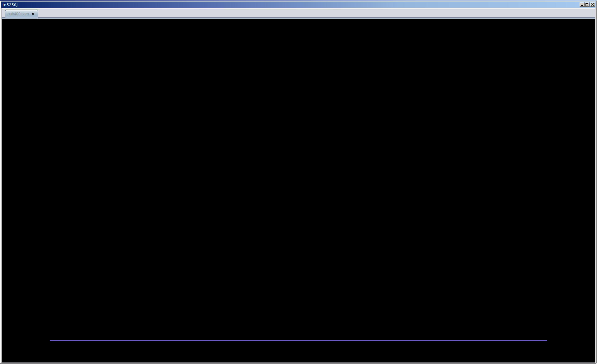
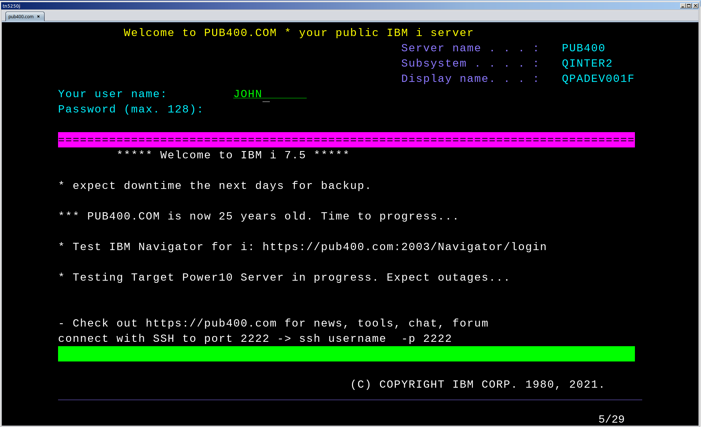
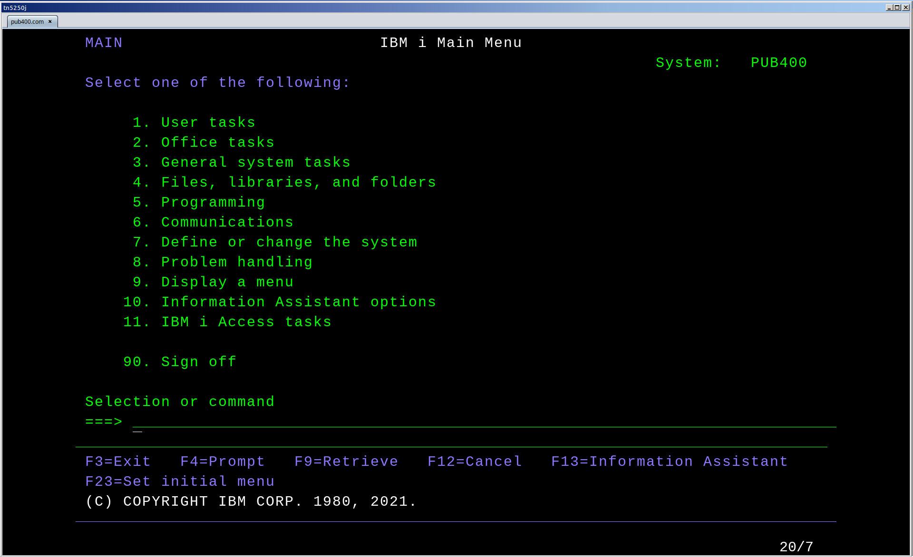

01
TN5250 proxy
Accept TN5250 connections and proxy them seamlessly to IBM i.
Interceptable gateway for IBM i
Built for integration
Accept TN5250 connections and proxy them seamlessly to IBM i.
Enable encrypted connections for both the client-facing gateway and upstream TN5250 sessions.
Exchange messages over stdin and stdout. Test gateway without integration programm, and test integration programm without gateway.
Track connection, sign-in state and captured screens with your favorite third party tools.
Architecture
Drop the gateway between existing TN5250 clients and your IBM i host to enforce external verification logic without modifying legacy AS/400 configuration.
Quickstart
https://github.com/io-org/tn5250_gateway.git
$ git clone https://github.com/io-org/tn5250_gateway.git
$ cd tn5250_gateway
$ mvn package$ java -jar tn5250_gateway-1.0-SNAPSHOT.jar
--------------------------------------------------------------------------------------------
REQUEST:
{
"type": "setup"
}
RESPONSE:
{
"proxy_port": 2323,
"proxy_tls": false,
"as400_host": "pub400.com",
"as400_port": 992,
"as400_tls": true,
"max_verification_timeout_minutes": 5,
"sign_in_screen": [
{ "value": "Your user name:", "row": 5, "col": 1, "name": null },
{ "value": "Password (max. 128):", "row": 6, "col": 1, "name": null },
{ "value": null, "row": 5, "col": 25, "name": "username" }
],
"screens_dir": "/tmp/screens", <- optional
"access_log_file": "/tmp/logs/mylog.ndjson" <- optional
}

--------------------------------------------------------------------------------------------
REQUEST:
{
"connection_id": "7494af8a-6f8d-4bbc-a719-51482f25aec9",
"type": "connect",
"tn5250_ip": "127.0.0.1"
}
RESPONSE:
{
"connection_id": "7494af8a-6f8d-4bbc-a719-51482f25aec9",
"type": "connect",
"allow": true
}

--------------------------------------------------------------------------------------------
REQUEST:
{
"connection_id": "7494af8a-6f8d-4bbc-a719-51482f25aec9",
"session_id": "3d44e9ed-4d0a-4f2e-88b7-2f0155a9db48",
"type": "sign_in",
"tn5250_ip": "127.0.0.1",
"fields": {
"username": "JOHN"
}
}
RESPONSE:
{
"connection_id": "7494af8a-6f8d-4bbc-a719-51482f25aec9",
"session_id": "3d44e9ed-4d0a-4f2e-88b7-2f0155a9db48",
"type": "sign_in",
"allow": true,
"max_session_timeout_minutes": 30, <- optional
"max_idle_timeout_minutes": 15 <- optional
}

$ rm -f /tmp/loop_pipe && mkfifo /tmp/loop_pipe
$ java -jar tn5250_gateway-1.0-SNAPSHOT.jar < /tmp/loop_pipe | demo.py > /tmp/loop_pipe
$ rm /tmp/loop_pipe